KIẾN TRÚC NHÀ VƯỜN HUẾ BỐ CỤC - KỸ THUẬT VÀ PHONG THỦY
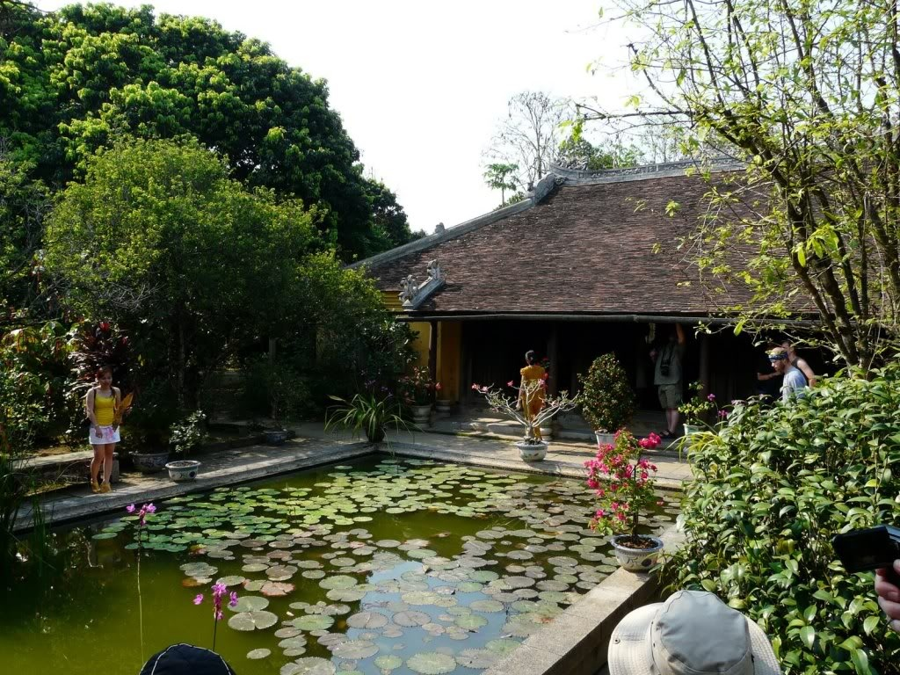
1. Tổng quan
Huế, cố đô triều đại nhà Nguyễn (1802-1945), được biết đến là thành phố vườn bởi sự cấu thành của những thành tố xanh như cảnh quan, lăng tẩm vườn, phủ đệ, và đặc biệt là các nhà vườn truyền thống. Nhà vườn truyền thống Huế luôn có sự kết nối hữu cơ giữa ngôi nhà, con người và sân vườn cảnh quan (hình 1). Nhắc đến nhà rường, nhà vườn thì ta sẽ nghĩ ngay đến Huế chứ không thể nghĩ đến các địa phương khác được. Có thể nói, đó là thương hiệu đặc trưng của Huế và chúng là những yếu tố không thể thiếu tạo nên vẻ đẹp tiềm ẩn và di sản văn hóa của thành phố vườn Huế.
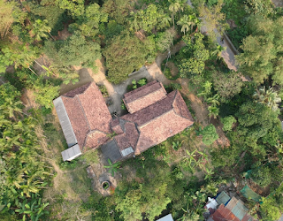
Hình 1. Nhà vườn “Xuân Viên Tiểu Cung” ở phường Kim Long (nguồn: tác giả)
Trong khi các chúa Nguyễn ở trong phủ và vua Nguyễn ở trong Tử Cấm Thành, các hoàng thân quốc thích, quan lại sống tại các ngôi nhà vườn tọa lạc xung quanh phủ và kinh thành. Kết quả, các ngôi nhà vườn tập trung chủ yếu ở trong khu vực kinh thành và các làng cổ xung quanh như Kim Long, Vỹ Dạ, Phú Cát và Nguyệt Biều (hình 2).
Những yếu tố như lối sống, tôn giáo, tín ngưỡng, luật lệ của triều Nguyễn, và đặc trưng địa lý, khí hậu Huế đã có ảnh hưởng đến sự hình thành, tổ chức không gian, hình khối, và môi trường sống của các nhà vườn truyền thống Huế. Các yếu tố này đã tạo nên đặc trưng duy nhất mà các nhà truyền thống ở những địa phương khác không thể có.
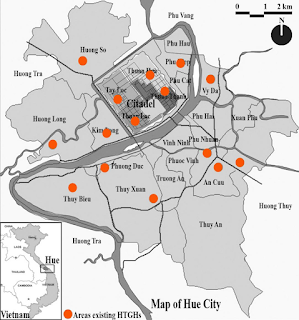
Hình 2. Bản đồ phân bố nhà vườn truyền thống Huế (nguồn: tác giả)
2. Sự hình thành và đặc điểm kiến trúc
2.1. Sự hình thành và thực trạng các nhà vườn truyền thống Huế
Có lẻ các nhà vườn truyền thống Huế bắt đầu xuất hiện vào thế kỷ 17 dưới thời kỳ chúa Nguyễn [3, tr. 137]. Sau đó, những ngôi nhà này nhanh chóng lan rộng trong giai đoạn triều đại nhà Nguyễn. Trong khu vực kinh thành, các ngôi nhà vườn truyền thống ban đầu có thể là nơi thư giãn và học tập của các hoàng tử dưới triều đại vua Minh Mạng (1820-1840) [10, tr. 95]. Sau này, hoàng thân quốc thích và các tầng lớp quan lại có thể ở trong nhà vườn truyền thống. Cuối cùng, dân thường có thể sở hữu các ngôi nhà này khi họ có điều kiện về tài chính. Hiện tại, số lượng các nhà vườn truyền thống Huế hiện hữu tại khu vực trong kinh thành và Kim Long chiếm tỷ lệ khá nhiều. Hình 3 cho thấy vị trí 84 ngôi nhà trong khu vực kinh thành và 34 ngôi nhà ở khu vực Kim Long.
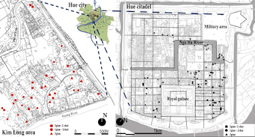
Hình 3. Phân bố nhà vườn truyền thống trong khu vực kinh thành và Kim Long (nguồn: tác giả)
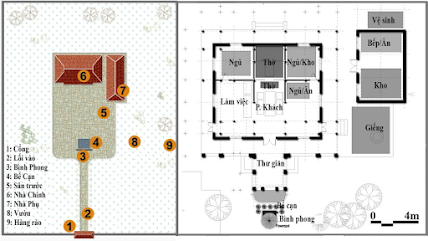
Hình 4. Tổng thể và không gian mặt bằng một ngôi nhà vườn truyền thống (nguồn: tác giả)
Nhìn vào tổng thể của một ngôi nhà vườn truyền thống Huế, ngôi nhà như một tiểu kinh thành thu nhỏ (hình 5). Núi Ngự Bình và sông Hương đóng vai trò là tiền án và yếu tố Minh Đường cho kinh thành, trong khi đó, cồn Hến và cồn Dã Viên như là hai người bảo vệ. Ở nhà vườn truyền thống, Bình Phong và Bể Cạn đóng vai trò tương tự như núi Ngự Bình và sông Hương của kinh thành, trong khi yếu tố Tả Thanh Long và Hữu Bạch Hổ của ngôi nhà như cồn Hến và cồn Dã Viên.
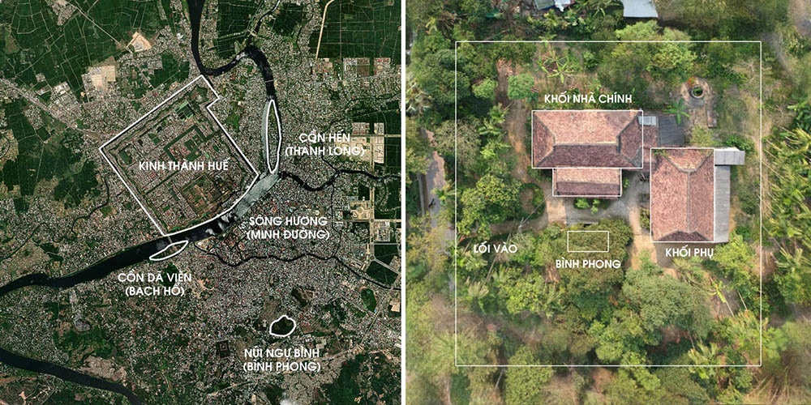
Hình 5. Tương quan tổng thể giữa kinh thành Huế và nhà vườn truyền thống (nguồn: tác giả)
Thông thường, cái cổng có mái dốc giúp che chắn thành viên gia đình hoặc người đi đường dưới ánh nắng chói chang của mặt trời hay những cơn mưa bất chợt. Phía sau cổng, một lối nhỏ dẫn đến bức Bình Phong và Bể Cạn (hình 6). Vai trò Bình Phong giúp làm chậm thời gian người khách khi vào nhà để chủ nhân có thể chỉnh trang trang phục lịch sự trước khi đón khách như là một nếp sống của người Huế.
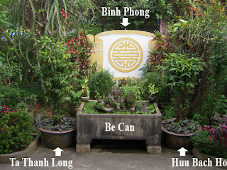
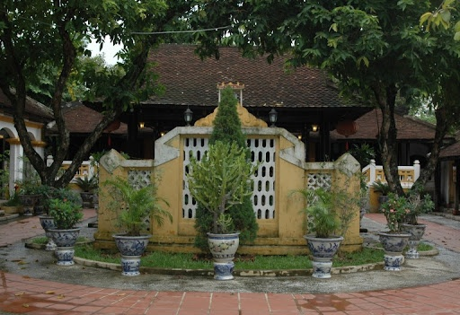
Hình 6. Bình Phong, Bể Cạn, yếu tố Tả Thanh Long và Hữu Bạch Hổ (nguồn: tác giả)
Theo nguyên tắc phong thủy, Bình Phong đóng vai trò tiền án chắn các luồng khí xấu, còn Bể Cạn đóng vai trò là yếu tố Minh Đường, đem lại sức khỏe, thịnh vượng cho chủ nhân. Yếu tố Tả Thanh Long và Hữu Bạch Hổ như hai người bảo vệ cho ngôi nhà. Thông thường, chúng có thể là hai cây nhỏ hoặc hai chậu cây bonsai nằm trước hai chái của Nhà Chính hoặc nằm hai bên Bình Phong.
Ở trung tâm ngôi nhà vườn truyền thống là Nhà Chính, thường xoay về hướng đông nam. Theo quan niệm của người Việt, hướng nam và đông nam được xem là hướng tốt mang lại sức khỏe, thịnh vượng, gió tốt cho ngôi nhà. Tuy nhiên, hầu hết các nhà vườn truyền thống ở Kim Long nằm dọc kênh thì xoay hướng về con kênh (yếu tố Minh Đường” trong phong thủy). Nhà Phụ thường nằm vuông góc một bên so với Nhà Chính.
Nhà Chính thông thường là nhà Rường (hoặc nhà Rội), cấu trúc truyền thống ở khu vực miền Trung Việt Nam (hình 7). Theo nghiên cứu của TS. Trần Bá Tịnh, nhà Rường bắt nguồn từ vùng Thanh Nghệ tỉnh (Nghệ An, Thanh Hóa ngày nay), sau đó lan rộng vào đàng trong và phát triển mạnh ở Huế thời nhà Nguyễn [9]. Từ nhà Rường và Rội, có thêm hai biến thể là Thượng Rường Hạ Rội, Rường bán thân. Qua khảo sát các nhà vườn truyền thống Huế, Nhà Chính đều là nhà Rường (trừ một ngôi nhà ở đường Lương Ngọc Quyến trong kinh thành có Nhà Chính là nhà Rội).
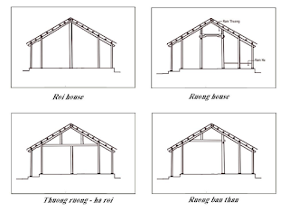
Hình 7. Cấu trúc nhà Rường, Rội, và biến thể (nguồn: tác giả)
Có thể khẳng định, cấu trúc nhà Rường là đặc trưng duy nhất ở miền Trung nói chung và ở Huế nói riêng. Đây được xem là cấu trúc thuần nhất, các cấu kiện ngôi nhà đều có một vai trò nhất định trong cấu tạo bộ khung. Điều này rất khác với nhà truyền thống khu vực Bắc bộ khi nhiều cấu kiện có thể không có vai trò gì trong cấu tạo bộ khung và chỉ mang tính trang trí, thẩm mỹ. Một số điểm đặc trưng ở nhà Rường có thể thấy như sau:
- Cấu trúc thuần nhất, hoàn thiện nhất so với các cấu trúc truyền thống khu vực Bắc bộ. Tuy các cấu kiện đơn giản nhưng đều có vai trò nhất định trong cấu tạo bộ khung.
- Có không gian rầm thượng và rầm hạ. Rầm thượng là không gian dưới nóc mái và trên trến, dùng để chứa đồ và trú ẩn khi có mưa lụt, thích ứng với khí hậu khắc nghiệt miền Trung. Rầm hạ là không gian dưới giường ngủ, nơi chứa rượu và đồ dùng khác của gia đình.
- Phương thức truyền lực ở nhà Rường là từ mái, chủ yếu chuyển theo phương nghiêng của kèo và xuống trực tiếp các cột. Trong khi ở các nhà truyền thống miền Bắc được truyền theo phương ngang, dọc, nghiêng, qua nhiều cấu kiện trung gian mới xuống cột.
- Liên kết giữa các kèo ở nhà Rường khác biệt so với kẻ ở vùng Bắc bộ. Đầu kèo cù (hiên) nằm gác lên đuôi kèo hàng ba, đầu kèo hàng ba gác lên đuôi kèo hàng nhì, đầu kèo hàng nhì gác lên đuổi kèo hàng nhất. Còn kẻ ở miền Bắc thì ngược lại: đuôi kẻ trên gác lên đầu kẻ dưới.
- Trong khi thước dùng để thiết kế xây dựng các nhà truyền thống khác là thước tầm (thước sàm, rui mực) thì đối với nhà Rường, người thợ sử dụng một loại thước đặc biệt, đó là thước nách. Theo giáo sư Hayashi, Nhật Bản, đây là loại thước chỉ có ở Huế mà không nơi nào có với hình tam giác đều.
- Hình khối nhà Rường ngoài phát triển theo phương ngang hai bên (1 gian, 3 gian, 5 gian, 7 gian,…) thì có thể phát triển trước sau. Chính vì vậy mà ở miền Trung, dạng nhà Rường hình vuông có thể thấy được.
- Hệ thống cửa gỗ nhà Rường được gọi là cửa bàn khoa. Nhà Rường phân loại dựa vào số gian và chái. Qua khảo sát các nhà vườn truyền thống ở khu vực kinh thành và Kim Long, nhà Rường chủ yếu có ba dạng: 1 gian - 2 chái (A), 3 gian - 2 chái (B), và 3 gian (C) như thể hiện ở hình 8. Đối với các phủ đệ hoặc một số trường hợp cá biệt thì có thể có 5 gian.
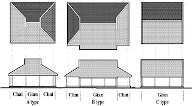
Hình 8. Phân loại nhà Rường dựa vào số gian và chái (nguồn: tác giả)
2.3. Cấu trúc không gian và môi trường sống nhà vườn truyền thống Huế
Trong tổ chức không gian Nhà Chính của một ngôi nhà vườn truyền thống, không gian gian giữa phía nữa sau thường là nơi thờ tự ông bà tổ tiên và phía trước là nơi thờ phật. Đây là không gian trang nghiêm nhất trong nhà. Chái trái (thường gọi là chái đông) là không gian dành cho nam và chái phải (thường gọi là chái tây) là không gian dành cho phụ nữ, thường nằm sát khu vực bếp ở Nhà Phụ. Không gian phía trước thờ tự khá linh hoạt, có thể là phòng khác, sinh hoạt chung, thỉnh thoảng là không gian ăn, thậm chí là nơi nghỉ ngơi, ngủ trưa của gia chủ.
Bếp, phòng ăn và kho thường ở Nhà Phụ, trong khi vệ sinh, phòng tắm, giặt giũ thường ở ngoài, phía sau của ngôi nhà. Bên cạnh đó, một phần không gian Nhà Phụ trước đây thường dùng là phòng ngủ cho phụ nữ.
Môi trường sống trong nhà vườn truyền thống Huế thể hiện sự hài hòa giữa ngôi nhà, thiên nhiên, và con người. Nhà Chính, Nhà Phụ, và các yếu tố khác được bao quanh khu vườn tạo nên một bức tranh hữu cơ tuyệt vời, phản ánh bố cục tổng thể, tổ chức không gian, và lối sống trong nhà vườn truyền thống (hình 9).
Một cái cổng xưa cùng hàng rào chè tàu có thể tạo sức hút, tò mò cho du khách hình dung không gian kiến trúc hấp dẫn đang ẩn chứa bên trong. Lối vào sau ngỏ dẫn dắt người khách đến Bình Phong, dừng lại một chút và rẻ trái để vào nhà cũng thể hiện lối sống của người Huế. Người khách, khi bước vào Nhà Chính, cẩn trọng nhấc chân bước qua cửa bàn khoa, cuối đầu xuống để khỏi đụng mái cũng là thể hiện tín ngưỡng truyền thống, như một sự tôn trọng của người khách đối với gia chủ. Ngôi nhà Rường nhỏ nhắn, bước cột nhỏ như nhắc nhở người khách cẩn trọng trong cử chỉ. Qua khảo sát, nhiều gia chủ quan niệm cốt nền hoặc chiều cao Nhà Chính cần cao hơn cốt nền hoặc chiều cao Nhà Phụ.
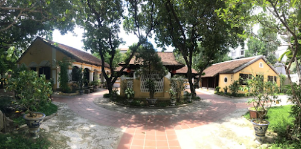
Hình 9. Nhà vườn truyền thống “Lạc Tịnh viên” ở 65 Phan Đình Phùng, TP. Huế (nguồn:
tác giả)
Bên trong ngôi nhà Rường, gia chủ thường trang hoàng rất công phu, tỉ mẫn không gian thờ tự. Những bức liễn, câu đối, hình ảnh cũ, và những bức khảm gỗ quý giá có thể được thấy ở đây. Nhiều gia chủ, mặc dù không biết chữ Hán, nhưng vẫn có thể đọc thuộc các ký tự trên câu đối, bức khảm gỗ trong nhà. Một lý do đơn giản vì đó như là những kỷ niệm, những lời răng dạy của tổ tiên, ông cha để lại. Với họ, đó là những ký ức, là sự liên kết giữa các thế hệ trong ngôi nhà. Những điều này phản ánh những giá trị phi vật thể mà mỗi ngôi nhà là một câu chuyện riêng biệt, đầy hấp dẫn, thể hiện nét văn hóa truyền thống và lối sống trong các nhà vườn truyền thống Huế.
Trong vườn, nhiều loại cây quả khác nhau được trồng theo quan điểm của chủ nhân. Thông thường, những cây bóng mát như nhãn, ổi, đào được trồng ở hướng tây. Cây gia vị và rau thường được trồng gần bếp nhằm thuận tiện cho sinh hoạt bếp núc. Những cây bonsai, cây cảnh thường được đặt trước Nhà Chính nhằm tôn thêm vẻ đẹp và giá trị ngôi nhà. Tất cả các cây trồng trong vườn dường như đều là thành viên của gia đình. Chủ nhân hàng ngày chăm sóc, tưới trồng như người thân. Khi có một ai đó mất đi, các cành cây cũng được buộc khăn trắng quanh thân như để nói rằng, các cành cây, hoa trái cũng đang tưởng nhớ người đã khuất. Điều đó thể hiện đặc trưng duy nhất trong lối sống và tín ngưỡng của người Huế nói chung và các chủ nhân trong nhà vườn truyền thống nói riêng.
Bài viết của TS. KTS. Nguyễn Ngọc Tùng (Khoa Kiến trúc, Trường Đại học Khoa học, Đại học Huế)